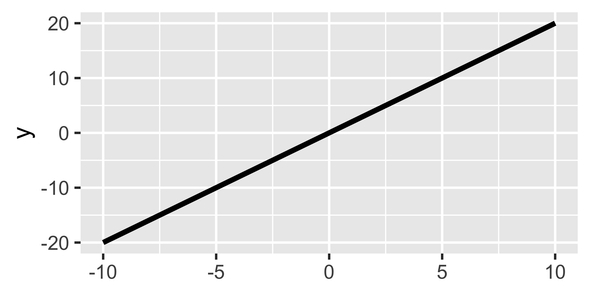
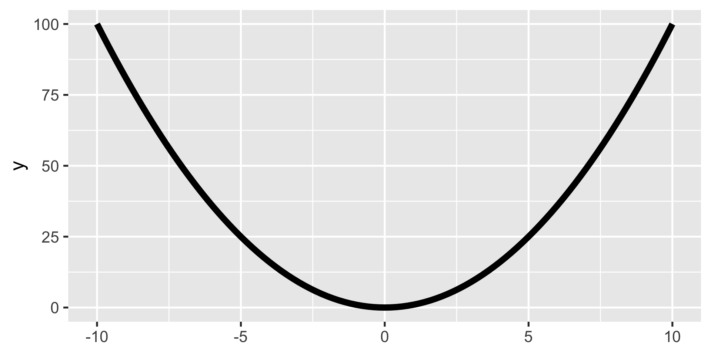
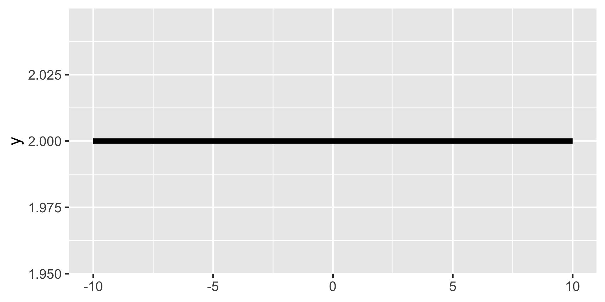
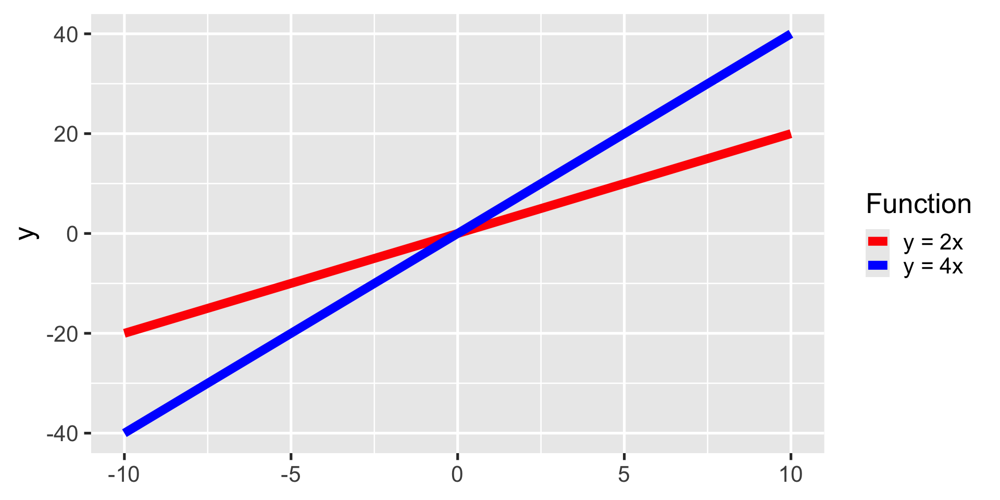
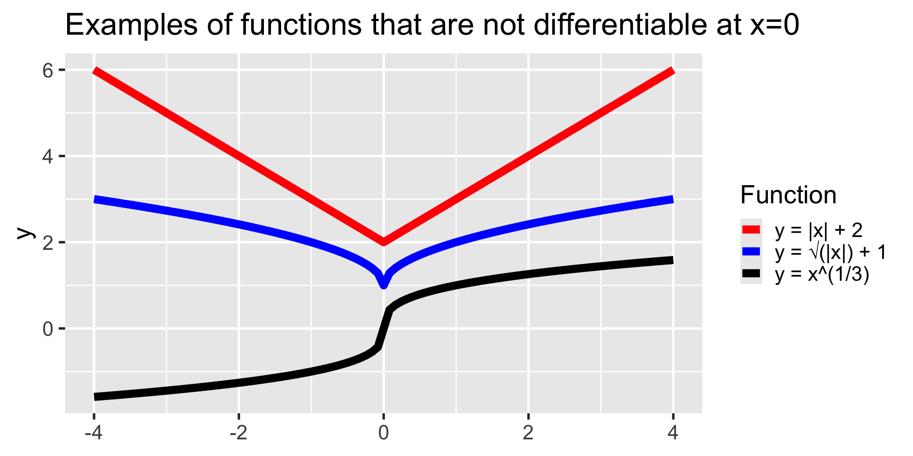

Calculus I
What have we learned so far?
Foundational ideas behind what you will have to deal with during your graduate program:
- Reading about methods \(\rightarrow\) Notation, sets, functions
- Working with data frames \(\rightarrow\) Matrix operations
Up next
Dealing with continuity (which implies infinity) \(\rightarrow\) Calculus
. . .
Two new operators:
Derivatives (Today)
Integrals (Friday)
Calculus
This is often where people experience the most difficulty
We are now operating with whole functions!
New operators have new, different rules
We will stick together!
Derivatives as a slope
How do we find the slope of this line?
\(m = \frac{f(x_2) - f(x_1)}{x_2-x_1} = \frac{rise}{run}\)
Let’s try it out!
Derivatives as rate of change
Positive derivative \(\rightarrow\) Function is increasing
Negative derivative \(\rightarrow\) Function is decreasing
Zeroes \(\rightarrow\) Max or min (more soon!)
Now try this one!
\(y = x^2\)

Why doesn’t it work?
We need an operation to calculate the slope or rate of change for (almost) any kind of continuous function
Enter derivatives
. . .
Generalize slope formula
\[ m = \frac{f(x_1+ \Delta x) - f(x_1)}{\Delta x} \]
Derivatives
When \(\Delta x\) is small enough
\[ \lim_{\Delta x\to0} \frac{f(x_1+ \Delta x) - f(x_1)}{\Delta x} = \frac{d}{dx} f(x) = f'(x) \]
Read \(\frac{d}{dx} f(x)\) as “the derivative of \(f\) of \(x\) with respect to \(x\)”
Read \(f'(x)\) as “\(f\) prime \(x\)” for a shorthand
How to compute a derivative?
- Plug in many values into \(\frac{rise}{run}\)
- Use properties of limits
- Solve analytically
- Software
How to compute a derivative?
- Plug in many values into \(\frac{rise}{run}\)
- Use properties of limits
- Solve analytically
- Software
Using limits
\[ \lim_{\Delta x\to0} \frac{f(x_1+ \Delta x) - f(x_1)}{\Delta x} \]
Using limits
\[ \lim_{h\to0} \frac{f(x_1+ h) - f(x_1)}{h} \]
. . .
Back to \(x^2\)
. . .
\[ \lim_{h \to0} \frac{f(x+ h)^2 - x^2}{h} \]
Using limits
\[ \lim_{h\to0} \frac{f(x_1+ h) - f(x_1)}{h} \]
Back to \(x^2\)
\[ \lim_{h\to0} \frac{f(x+ h)^2 - x^2}{h} = \lim_{h\to0} \frac{x^2 + 2xh + 2h^2 - x^2}{h} \]
Using limits
\[ \lim_{h\to0} \frac{f(x_1+ h) - f(x_1)}{h} \]
Back to \(x^2\)
\[ \lim_{h\to0} \frac{f(x+ h)^2 - x^2}{h} = \lim_{h\to0} \frac{x^2 + 2xh + 2h^2 - x^2}{h} = \lim_{h \to 0} \frac{2xh + 2h^2}{h} \]
Using limits
\[ \lim_{h\to0} \frac{f(x_1+ h) - f(x_1)}{h} \]
Back to \(x^2\)
\[ \lim_{h\to0} \frac{f(x+ h)^2 - x^2}{h} = \lim_{h\to0} \frac{x^2 + 2xh + 2h^2 - x^2}{h} = \lim_{h \to 0} \frac{2xh + 2h^2}{h} \] \[ = \lim_{h \to 0} \frac{(2x+2h) h}{h} \]
Using limits
\[ \lim_{h\to0} \frac{f(x_1+ h) - f(x_1)}{h} \]
Back to \(x^2\)
\[ \lim_{h\to0} \frac{f(x+ h)^2 - x^2}{h} = \lim_{h\to0} \frac{x^2 + 2xh + 2h^2 - x^2}{h} = \lim_{h \to 0} \frac{2xh + 2h^2}{h} \] \[ = \lim_{h \to 0} \frac{(2x+2h) h}{h} = \lim_{h \to 0} 2x+2h \]
Using limits
\[ \lim_{h\to0} \frac{f(x_1+ h) - f(x_1)}{h} \]
Back to \(x^2\)
\[ \lim_{h\to0} \frac{f(x+ h)^2 - x^2}{h} = \lim_{h\to0} \frac{x^2 + 2xh + 2h^2 - x^2}{h} = \lim_{h \to 0} \frac{2xh + 2h^2}{h} \] \[ = \lim_{h \to 0} \frac{(2x+2h) h}{h} = \lim_{h \to 0} 2x+2h \] \[ =2x+0 \]
Using limits
\[ \lim_{h\to0} \frac{f(x_1+ h) - f(x_1)}{h} \]
Back to \(x^2\)
\[ \lim_{h\to0} \frac{f(x+ h)^2 - x^2}{h} = \lim_{h\to0} \frac{x^2 + 2xh + 2h^2 - x^2}{h} = \lim_{h \to 0} \frac{2xh + 2h^2}{h} \] \[ = \lim_{h \to 0} \frac{(2x+2h) h}{h} = \lim_{h \to 0} 2x+2h \] \[ =2x+0 = 2x \]
How to compute a derivative?
- Plug in many values into \(\frac{rise}{run}\)
- Use properties of limits
- Solve analytically
- Software
How to compute a derivative?
- Plug in many values into \(\frac{rise}{run}\)
- Use properties of limits
- Solve analytically
- Software
Rules of differentiation
. . .
Differentation: “Taking the derivative”
Rules of differentiation
Constant rule: \((c)' = 0\).
. . .
\(y = 2\)

Rules of differentiation
Coefficient rule: \((c \cdot f(x))' = c \cdot f'(x)\)
. . .

Rules of differentiation
Sum/difference rule: \((f(x) \pm g(x))' = f'(x) \pm g'(x)\).
. . .
Example: \(f(x) = 3x + 7\)
. . .
\[ f'(x) = (3x + 7)' \]
. . .
\[ = (3x)' + (7)' \]
. . .
\[ = 3 + 0 \]
. . .
\[ = 3 \]
Rules of differentiation
Power rule: \((x^n)'=nx^{(n-1)}\)
. . .
\[ f(x) = x^2 \]
. . .
\[ f'(x) = nx^{(n-1)} \]
. . .
\[ = 2x^{(2-1)} \]
. . .
\[ = 2x \]
- Rate of change depends on values of \(x\)
- “… at a given point”
Practice
Let’s try out \(\frac{d}{dx}4x^3\) and \(\frac{d}{dx}(x^2 + 2x)\) on the board.
More practice
Use the differentiation rules we have covered so far to calculate the derivatives of \(y\) with respect to \(x\) of as many as these as you can.
- \(y = 2x^2 + 10\)
- \(y = 5x^4 - \frac{2}{3}x^3\)
- \(y = 9 \sqrt x\)
- \(y = \frac{4}{x^2}\)
- \(y = \frac{2w}{5}\)
Rules of differentiation
Exponent and logarithm rules:
\[ \begin{aligned} (c^x)' &= c^x \cdot ln(c), & \forall x>0 \\ \\ (log_a(x))' &= \frac{1}{x \cdot ln(a)}, & \forall x>0 \\ \end{aligned} \]
Rules of differentiation
Exponent and logarithm rules:
Euler’s number (\(e\)) has interesting properties when it comes to derivatives.
\[ \begin{aligned} (e^x)' &= e^x \\ \\ (ln(x))' &= \frac{1}{x}, & \forall x>0 \end{aligned} \]
More more practice
Compute the following:
- \(\frac{d}{dx}(10e^x)\)
- \(\frac{d}{dx}(ln(x) - \frac{e^2}{3})\)
Advanced rules
Product rule: \((f(x)g(x))'=f'(x)g(x) + g'(x)f(x)\)
. . .
\[ [(3x+4)(x+2)]' \]
. . .
\[ f(x) = (3x+4), g(x) = (x+2); f'(x) = 3, g'(x) = 1 \]
. . .
\[ \color{blue}{f'(x)}\color{yellow}{g(x)} + \color{purple}{g'(x)}\color{green}{f(x)} \]
. . .
\[ = \color{blue}3 \color{yellow}{(x+2)} + \color{purple}{1} \color{green}{(3x+4)} \]
. . .
\[ = 3x + 6 + 3x+ 4 \]
. . .
\[ = 6x + 10 \]
Advanced rules
Quotient rule: \(\displaystyle(\frac{f(x)}{g(x)})' = \frac{f'(x)g(x) + g'(x)f(x)}{[g(x)]^2}\)
. . .
\[ \frac{3x^2}{x+2} \]
Advanced rules
Quotient rule: \(\displaystyle(\frac{f(x)}{g(x)})' = \frac{f'(x)g(x) + g'(x)f(x)}{[g(x)]^2}\)
\[ \frac{3x^2}{x+2} \Rightarrow f(x) = 3x^2, g(x) = x + 2; f'(x) = 6x, g'(x) = 1 \]
. . .
\[ \frac{\color{blue}{f'(x)}\color{yellow}{g(x)} + \color{purple}{g'(x)}\color{green}{f(x)}}{[\color{yellow}{g(x)}]^2} = \frac{\color{blue}{6x}\color{yellow}{(x+2)} - \color{purple}1 \color{green}{(3x^2)}}{\color{yellow}{(x+2)}^2} \]
. . .
\[ = \frac{6x^2 + 12x - 3x2}{(x+2)^2} = \frac{3x^2+12x}{(x+2)^2} \]
Advanced rules
Chain rule: \((f(g(x))' = f'(g(x)) \cdot g'(x)\)
. . .
\[ f(g(x)) = (x+3)^3 \]
Advanced rules
Chain rule: \([f(g(x))]' = f'(g(x)) \cdot g'(x)\)
\[ f(g(x)) = (x+3)^3 \Rightarrow f(g(x)) = g(x)^3, g(x) = (x+3) \]
. . .
\[ f'(x) = 3x^2 \Rightarrow f'(g(x)) = 3 (x+3)^2, g'(x) = 1 \]
. . .
Substitute
\[ [f(g(x))]' = 3(x+3)^2 \cdot 1 \]
More more more practice
- \(\frac{d}{dx}x^3 \cdot x\)
- \(\frac{d}{dx}e^x \cdot x^2\)
- \(\frac{d}{dx}(3x^4-8)^2\)
Higher-order derivatives
- \(f'(x)\): First derivative
- \(f''(x)\): Second derivative
- \(f'''(x)\)?
. . .
If we were driving a car:
- \(f(x)\) = distance traveled at time \(x\)
- \(f'(x)\) = speed at time \(x\)
- \(f''(x)\) = acceleration at time \(x\)
. . .
To get \(f''(x)\) just take the derivative of the output of \(f'(x)\)
Partial derivative
. . .
What happens when we have more than one variable? \(f(x,z)\)
. . .
Partial derivative
\[ \frac{\partial}{\partial_x}f(x,z) = \frac{\partial_y}{\partial_x} = \partial_x f \]
. . .
Just treat other variables as constants and calculate the derivative of the target variable (usually \(x\))
Example
\[ \begin{aligned} y = f(x,z) &= xz \\ \frac{\partial_y}{\partial_x} &= z \end{aligned} \]
. . .
Let’s try \(\displaystyle\frac{\partial (x^2y+xy^2-x)}{\partial x}\) and \(\displaystyle\frac{\partial (x^2y+xy^2-x)}{\partial y}\) together
Differentiability of functions
- Not all functions are differentiable
- We need continuous and reasonably smooth functions
- Informally: Can draw them without lifting the pen
- Formally: A function is continuous at a point \(a\) if: \(\lim_{x \to a} f(x)=f(a)\)
- Differentiable \(\to\) continuous
- Continuous \(\not\to\) differentiable

How to compute a derivative?
- Plug in many values into \(\frac{rise}{run}\)
- Use properties of limits
- Solve analytically
- Software
How to compute a derivative?
- Plug in many values into \(\frac{rise}{run}\)
- Use properties of limits
- Solve analytically
- Software
Using computers
- Symbolic differentiation: Do the math for you (WolframAlpha or Mathematica)
- Numerical differentiation: Evaluate the function at many values (
optim()in R) - Automatic differentiation: Break up functions into elementary operations and use chain rule (
torchpackage in R, various packages in Python)
Optimization
Find minimum or maximum values
Valleys are minima
Peaks are maxima
Both are extrema
Extrama can be local or global
First order condition
Minimum: Derivative is negative before and positive after
Maximum: Derivative is positive before and negative after
Extrema are critical points
First order condition helps us find them
. . .
\[FOC: f'(x)=0\]
Second order condition
. . .
FOC finds critical points, but can’t tell if minimum or maximum
. . .
Second derivative test
Start by identifying \(f''(x)\)
Substitute in the stationary points \((x^*)\) identified from the FOC
\(f''(x^*) > 0\) we have a local minimum
\(f''(x^*) < 0\) we have a local maximum
\(f''(x^*) = 0\) we (may) have an inflection point - need to calculate higher-order derivatives
More more more more practice
Obtain FOC and SOC for \(\displaystyle y=\frac{1}{2} x^3 + 3 x^2 - 2\)
Local vs. global extrema
Extreme value theorem:
If a real-valued function is continuous on a closed and bounded (finite) interval, the function must have a global minimum and a global maximum on that interval at least once
Either at the boundaries or at one of the local extrema
Find by comparing local min/max to the value of the function at the endpoints
Could be limits as function approaches \(-\infty\) and \(+\infty\)
Practice again
Check \(\displaystyle y=\frac{1}{2} x^3 + 3 x^2 - 2\) for global extrema
Another one
Identify the global extrema of the function \(\displaystyle \frac{x^3}{3} - \frac{3}{2}x^2 -10x\) in the interval \([-6, 6]\)